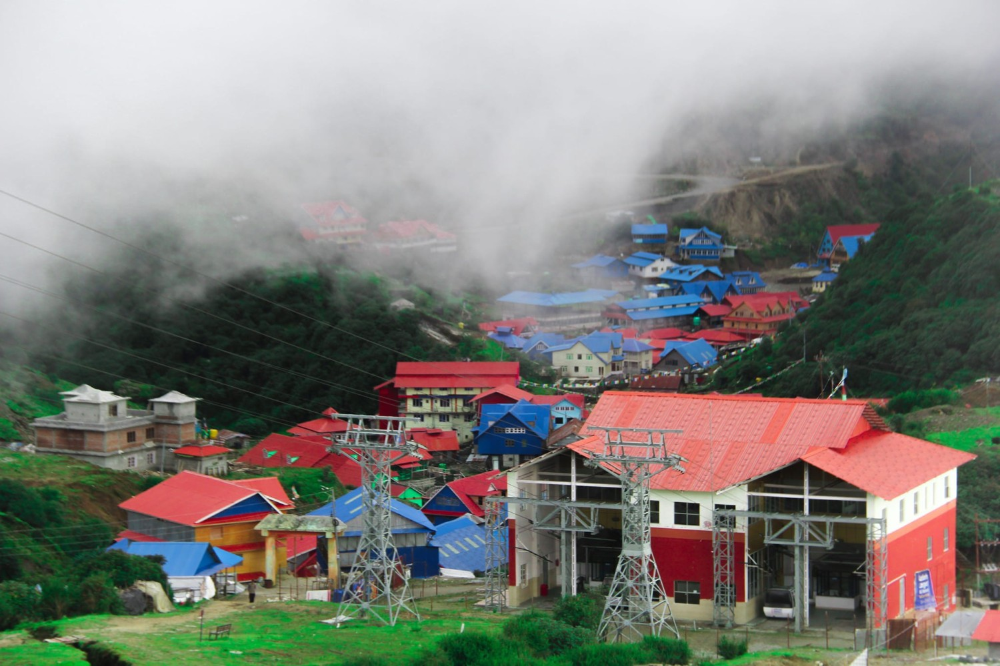
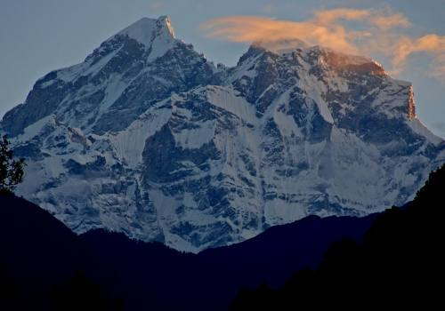

Tourist Destination

Kuri village
Kuri village, located in the Dolakha district of Nepal, is a picturesque settlement nestled in the foothills of the Gaurishankar Himal. It serves as a popular stop for trekkers and pilgrims on their way to the sacred Kalinchowk Bhagwati Temple.

Gaurishankar Himal
Gaurishankar Himal, located in the Dolakha district of Nepal, is one of the most prominent and sacred peaks in the Himalayas, standing at an elevation of 7,134 meters. Named after the Hindu deities Lord Shiva (Gauri) and Goddess Parvati (Shankar), the mountain holds deep religious significance for both Hindus and Buddhists.